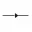

Category notes
What is in this category
This category collects url redirection services and resources from the original old free online resources list. It includes 38 links with Wayback references, status notes, short descriptions, favicon badges when available, and live links when a current site is still useful. Example entries include Idz, Cjb, D.bz, Quickurl.
Era totals
1990s: 26 Early 2000s: 10 Mid-2000s: 2
Status totals
Defunct or closed: 34 Changed over time: 1 Status uncertain: 1 Active or preserved: 2
Service links
URL Redirection directory
Use the cards for quick browsing or the table for a compact full list. Older, changed, or closed services open through Wayback first.
38 links showing
-
Idz is an url redirection entry listed as defunct or closed. The Wayback Machine link is used first because the live site may no longer function.
-
Cjb is an url redirection entry that changed from its original free-web era form. The Wayback link is the best primary reference for old versions.
-
D.bz is an url redirection entry listed as defunct or closed. The Wayback Machine link is used first because the live site may no longer function.
-
Quickurl is an url redirection entry listed as defunct or closed. The Wayback Machine link is used first because the live site may no longer function.
-
ShortURL is an url redirection entry with uncertain current status. The Wayback Machine link is used first so the listing still has a reliable reference point.
-
Neaturl is an url redirection entry listed as defunct or closed. The Wayback Machine link is used first because the live site may no longer function.
-
N2v is an url redirection entry listed as defunct or closed. The Wayback Machine link is used first because the live site may no longer function.
-
Hotredirect is an url redirection entry listed as defunct or closed. The Wayback Machine link is used first because the live site may no longer function.
-
Ipfox is an url redirection entry listed as defunct or closed. The Wayback Machine link is used first because the live site may no longer function.
-
B4.to is an url redirection entry listed as defunct or closed. The Wayback Machine link is used first because the live site may no longer function.
-
Iscool is an url redirection entry listed as defunct or closed. The Wayback Machine link is used first because the live site may no longer function.
-
Hacked.at is an url redirection entry listed as defunct or closed. The Wayback Machine link is used first because the live site may no longer function.
-
Emu.vg is an url redirection entry listed as defunct or closed. The Wayback Machine link is used first because the live site may no longer function.
-
Dot.nu is an url redirection entry listed as defunct or closed. The Wayback Machine link is used first because the live site may no longer function.
-
Myredirector is an url redirection entry listed as defunct or closed. The Wayback Machine link is used first because the live site may no longer function.
-
Kickme.to is an url redirection entry listed as defunct or closed. The Wayback Machine link is used first because the live site may no longer function.
-
Has.it is an url redirection entry listed as defunct or closed. The Wayback Machine link is used first because the live site may no longer function.
-
URL Shortener, Branded Short Links & Analytics | TinyURL
-
Bitly makes it easy to create, share, and track short links and QR Codes. Find what
-
V3 is an url redirection entry listed as defunct or closed. The Wayback Machine link is used first because the live site may no longer function.
-
XRL.us is an url redirection entry listed as defunct or closed. The Wayback Machine link is used first because the live site may no longer function.
-
SnipURL is an url redirection entry listed as defunct or closed. The Wayback Machine link is used first because the live site may no longer function.
-
Shorl is an url redirection entry listed as defunct or closed. The Wayback Machine link is used first because the live site may no longer function.
-
NotLong is an url redirection entry listed as defunct or closed. The Wayback Machine link is used first because the live site may no longer function.
-

DoiopDoiop is an url redirection entry listed as defunct or closed. The Wayback Machine link is used first because the live site may no longer function.
-
MakeAShorterLink is an url redirection entry listed as defunct or closed. The Wayback Machine link is used first because the live site may no longer function.
-
TinyLink is an url redirection entry listed as defunct or closed. The Wayback Machine link is used first because the live site may no longer function.
-
Short is an url redirection entry listed as defunct or closed. The Wayback Machine link is used first because the live site may no longer function.
-
Zap.to is an url redirection entry listed as defunct or closed. The Wayback Machine link is used first because the live site may no longer function.
-
Go.to is an url redirection entry listed as defunct or closed. The Wayback Machine link is used first because the live site may no longer function.
-
Come.to is an url redirection entry listed as defunct or closed. The Wayback Machine link is used first because the live site may no longer function.
-
LinkTool is an url redirection entry listed as defunct or closed. The Wayback Machine link is used first because the live site may no longer function.
-
ShrinkURL is an url redirection entry listed as defunct or closed. The Wayback Machine link is used first because the live site may no longer function.
-
URLcut is an url redirection entry listed as defunct or closed. The Wayback Machine link is used first because the live site may no longer function.
-
TrimURL is an url redirection entry listed as defunct or closed. The Wayback Machine link is used first because the live site may no longer function.
-
QuickRedirect is an url redirection entry listed as defunct or closed. The Wayback Machine link is used first because the live site may no longer function.
-
Redir is an url redirection entry listed as defunct or closed. The Wayback Machine link is used first because the live site may no longer function.
-
LinkShrink is an url redirection entry listed as defunct or closed. The Wayback Machine link is used first because the live site may no longer function.
Compact table
All URL Redirection entries
| Icon | Service | Description | Main link | Era | Status | Archive | Archive target |
|---|---|---|---|---|---|---|---|
| Idz | Idz is an url redirection entry listed as defunct or closed. The Wayback Machine link is used first because the live site may no longer function. | Archive | 1990s | Defunct or closed | Wayback | idz.net |
|
| Cjb | Cjb is an url redirection entry that changed from its original free-web era form. The Wayback link is the best primary reference for old versions. | Archive | 1990s | Changed over time | Wayback | cjb.net |
|
| D.bz | D.bz is an url redirection entry listed as defunct or closed. The Wayback Machine link is used first because the live site may no longer function. | Archive | 1990s | Defunct or closed | Wayback | d.buzz.bz |
|
| Quickurl | Quickurl is an url redirection entry listed as defunct or closed. The Wayback Machine link is used first because the live site may no longer function. | Archive | 1990s | Defunct or closed | Wayback | quickurl.com |
|
| ShortURL | ShortURL is an url redirection entry with uncertain current status. The Wayback Machine link is used first so the listing still has a reliable reference point. | Archive | 1990s | Status uncertain | Wayback | shorturl.com |
|
| Neaturl | Neaturl is an url redirection entry listed as defunct or closed. The Wayback Machine link is used first because the live site may no longer function. | Archive | 1990s | Defunct or closed | Wayback | neaturl.com |
|
| N2v | N2v is an url redirection entry listed as defunct or closed. The Wayback Machine link is used first because the live site may no longer function. | Archive | 1990s | Defunct or closed | Wayback | n2v.net |
|
| Hotredirect | Hotredirect is an url redirection entry listed as defunct or closed. The Wayback Machine link is used first because the live site may no longer function. | Archive | 1990s | Defunct or closed | Wayback | hotredirect.com |
|
| Ipfox | Ipfox is an url redirection entry listed as defunct or closed. The Wayback Machine link is used first because the live site may no longer function. | Archive | 1990s | Defunct or closed | Wayback | ipfox.com |
|
| B4.to | B4.to is an url redirection entry listed as defunct or closed. The Wayback Machine link is used first because the live site may no longer function. | Archive | 1990s | Defunct or closed | Wayback | b4.to |
|
| Iscool | Iscool is an url redirection entry listed as defunct or closed. The Wayback Machine link is used first because the live site may no longer function. | Archive | 1990s | Defunct or closed | Wayback | iscool.net |
|
| Hacked.at | Hacked.at is an url redirection entry listed as defunct or closed. The Wayback Machine link is used first because the live site may no longer function. | Archive | 1990s | Defunct or closed | Wayback | hacked.at |
|
| Emu.vg | Emu.vg is an url redirection entry listed as defunct or closed. The Wayback Machine link is used first because the live site may no longer function. | Archive | 1990s | Defunct or closed | Wayback | emu.vg |
|
| Dot.nu | Dot.nu is an url redirection entry listed as defunct or closed. The Wayback Machine link is used first because the live site may no longer function. | Archive | 1990s | Defunct or closed | Wayback | dot.nu |
|
| Myredirector | Myredirector is an url redirection entry listed as defunct or closed. The Wayback Machine link is used first because the live site may no longer function. | Archive | 1990s | Defunct or closed | Wayback | myredirector.com |
|
| Kickme.to | Kickme.to is an url redirection entry listed as defunct or closed. The Wayback Machine link is used first because the live site may no longer function. | Archive | 1990s | Defunct or closed | Wayback | kickme.to |
|
| Has.it | Has.it is an url redirection entry listed as defunct or closed. The Wayback Machine link is used first because the live site may no longer function. | Archive | 1990s | Defunct or closed | Wayback | has.it |
|
| TinyURL | URL Shortener, Branded Short Links & Analytics | TinyURL | Live | Early 2000s | Active or preserved | Wayback | tinyurl.com |
|
| Bitly | Bitly makes it easy to create, share, and track short links and QR Codes. Find what | Live | Mid-2000s | Active or preserved | Wayback | bitly.com |
|
| V3 | V3 is an url redirection entry listed as defunct or closed. The Wayback Machine link is used first because the live site may no longer function. | Archive | 1990s | Defunct or closed | Wayback | v3.com |
|
| XRL.us | XRL.us is an url redirection entry listed as defunct or closed. The Wayback Machine link is used first because the live site may no longer function. | Archive | Early 2000s | Defunct or closed | Wayback | xrl.us |
|
| SnipURL | SnipURL is an url redirection entry listed as defunct or closed. The Wayback Machine link is used first because the live site may no longer function. | Archive | Early 2000s | Defunct or closed | Wayback | snipurl.com |
|
| Shorl | Shorl is an url redirection entry listed as defunct or closed. The Wayback Machine link is used first because the live site may no longer function. | Archive | Early 2000s | Defunct or closed | Wayback | shorl.com |
|
| NotLong | NotLong is an url redirection entry listed as defunct or closed. The Wayback Machine link is used first because the live site may no longer function. | Archive | Early 2000s | Defunct or closed | Wayback | notlong.com |
|
| Doiop | Doiop is an url redirection entry listed as defunct or closed. The Wayback Machine link is used first because the live site may no longer function. | Archive | Early 2000s | Defunct or closed | Wayback | doiop.com |
|
| MakeAShorterLink | MakeAShorterLink is an url redirection entry listed as defunct or closed. The Wayback Machine link is used first because the live site may no longer function. | Archive | Early 2000s | Defunct or closed | Wayback | makeashorterlink.com |
|
 |
TinyLink | TinyLink is an url redirection entry listed as defunct or closed. The Wayback Machine link is used first because the live site may no longer function. | Archive | Early 2000s | Defunct or closed | Wayback | tinylink.com |
| Short | Short is an url redirection entry listed as defunct or closed. The Wayback Machine link is used first because the live site may no longer function. | Archive | 1990s | Defunct or closed | Wayback | short.com |
|
| Zap.to | Zap.to is an url redirection entry listed as defunct or closed. The Wayback Machine link is used first because the live site may no longer function. | Archive | 1990s | Defunct or closed | Wayback | zap.to |
|
| Go.to | Go.to is an url redirection entry listed as defunct or closed. The Wayback Machine link is used first because the live site may no longer function. | Archive | 1990s | Defunct or closed | Wayback | go.to |
|
| Come.to | Come.to is an url redirection entry listed as defunct or closed. The Wayback Machine link is used first because the live site may no longer function. | Archive | 1990s | Defunct or closed | Wayback | come.to |
|
| LinkTool | LinkTool is an url redirection entry listed as defunct or closed. The Wayback Machine link is used first because the live site may no longer function. | Archive | 1990s | Defunct or closed | Wayback | linktool.com |
|
 |
ShrinkURL | ShrinkURL is an url redirection entry listed as defunct or closed. The Wayback Machine link is used first because the live site may no longer function. | Archive | 1990s | Defunct or closed | Wayback | shrinkurl.com |
 |
URLcut | URLcut is an url redirection entry listed as defunct or closed. The Wayback Machine link is used first because the live site may no longer function. | Archive | Early 2000s | Defunct or closed | Wayback | urlcut.com |
| TrimURL | TrimURL is an url redirection entry listed as defunct or closed. The Wayback Machine link is used first because the live site may no longer function. | Archive | Early 2000s | Defunct or closed | Wayback | trimurl.com |
|
| QuickRedirect | QuickRedirect is an url redirection entry listed as defunct or closed. The Wayback Machine link is used first because the live site may no longer function. | Archive | 1990s | Defunct or closed | Wayback | quickredirect.com |
|
| Redir | Redir is an url redirection entry listed as defunct or closed. The Wayback Machine link is used first because the live site may no longer function. | Archive | 1990s | Defunct or closed | Wayback | redir.com |
|
| LinkShrink | LinkShrink is an url redirection entry listed as defunct or closed. The Wayback Machine link is used first because the live site may no longer function. | Archive | Mid-2000s | Defunct or closed | Wayback | linkshrink.com |